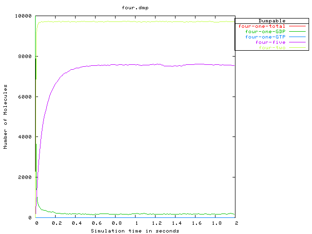
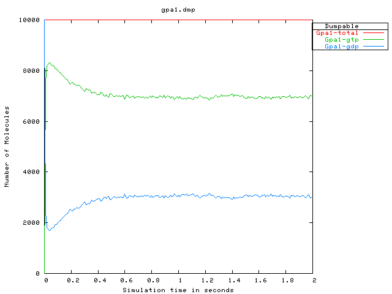

This demo shows the export of a somewhat more extensive reaction network from moleculizer to the ODE-based demonstration simulator odie; this simulation has 29 species and 53 reactions. To save time running the demo, the receptor simulation has been run ahead of time and its reaction network transformed. (On my machine, this receptor demo takes moleculizer about 2.5 minutes, generating about 7.2 million reaction events.)
The odie input file made by transforming moleculizer's reaction network (state dump) must be edited a little by hand to set odie-specific input parameters; this process has been omitted from the demo also.
The first pair of output plots, respectively from moleculizer and odie, gives the best overview of this alpha pathway receptor simulation. Alpha factor is introduced at the beginning of the simulation, instead of waiting for pathway components to equilibrate, because odie has no provision at this time for introducing reactants in the course of ODE solution.
Please consult the "receptor" demo for a fuller explanation of this output.
From moleculizer we get the following:
and from odie, we get the following:

The next pair of plots shows the GTP/GDP binding status of the Gpa1 component of the g-protein coupled receptor mechanism. Again, please consult the "receptor" demo for a fuller explanation of this output.
From moleculizer we get the following:
and from odie, we get the following: